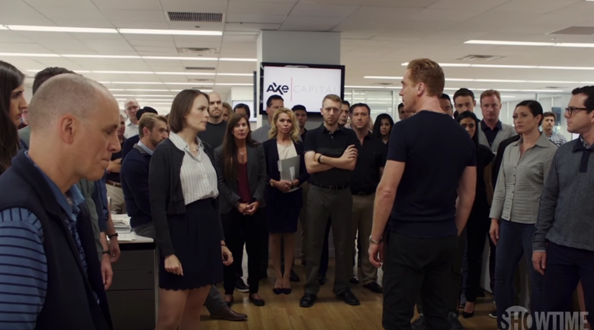

01
办公室 → 四十八小时前
连胜被当成唯一不能贬值的资产

剧情事实瓦格斯归来想谈大事，阿克斯先讲自己如何苦撑；画面随即退回四十八小时前。桑索米克屏幕故障拖累四十万部手机交付，基金季度回报降到负 2.3%。阿克斯拒绝粉饰持仓，也拒绝斯蒂芙提出的接受亏损，命令团队在三天内找到翻盘办法。[1][2]
这一场为什么重要 · 个人解读
他愤怒的对象不只是亏损金额，还有“永远知道答案”的形象可能破裂。斯蒂芙相信承认有限能够建立信任，阿克斯却认为连胜一断，公司全部信用都会受损。开场让瓦格斯先沉默，随后才解释这场危机，也把谁有资格占用时间变成了权力的一部分。
因此 → 寻找短期交易的任务压过了其他人承认疲惫与失败的空间。